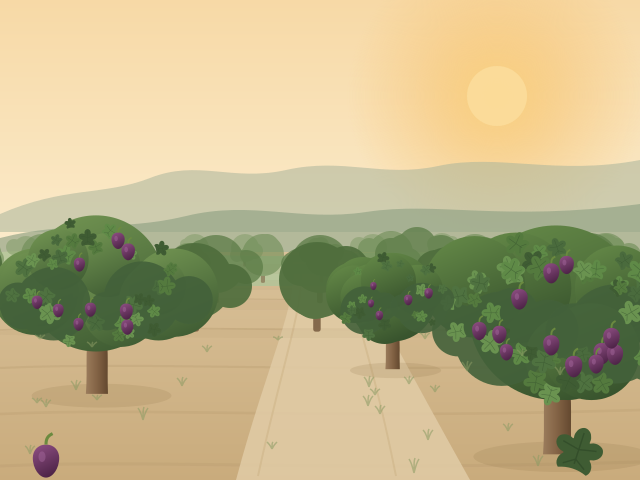
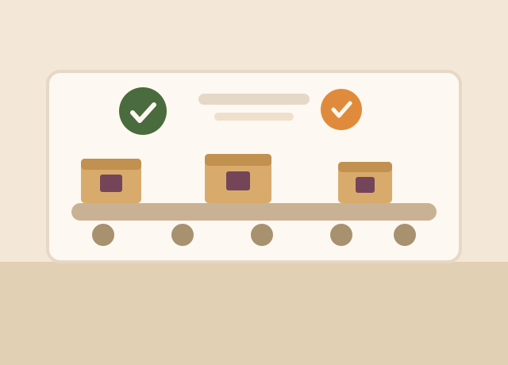

It began with a harvest nobody wanted to sell cheap
In 1968 our grandfather refused the price offered at the Aydin auction and dried his own crop instead, selling it directly to a grocer in Izmir. That decision — keep the fruit, keep the value, keep the relationship — is still the whole business model.
The second generation added a drying and packing facility in 1994. The third added laboratory testing, optical sorting and export documentation, and opened the first accounts in Northern Europe. What has not changed is that someone from the family still walks the gardens before every harvest.
Today we work with 140 contracted growers across Aydin for figs and Malatya for apricots, dry and pack everything ourselves, and ship from Izmir.

Where we stand today
58
Years of harvests
140
Contracted growers
22,500 t
Annual capacity
24
Export markets
Four commitments we do not trade away
Fair to the grower
Season-long contracts agreed before harvest, paid within 14 days. A grower who is not squeezed can afford to wait for the fruit to ripen properly — and that is what we are buying.
Tested, not assumed
Our in-house lab screens every lot for aflatoxin, moisture and residues, with third-party confirmation before shipment. If a lot fails, it does not leave the building.
Honest ingredients
Our natural grades contain fruit and nothing else. Where a market requires sulphur or a coating we say so on the label, at the level you specify, documented.
Lighter on the land
Solar drying wherever weather allows, fig-waste composting returned to the gardens, and recyclable mono-material packaging offered across the retail range.
Hygiene at every stage, not just at the end
Dried fruit is handled many times between the tree and the carton. Each of those steps is a place where quality is either protected or lost, so each one is written down, trained for and checked.
Trained hands
Our grading and packing teams are permanent staff, most with more than a decade on the line. Seasonal workers train alongside them before they touch product.
Modern plant
Washing, fumigation-free pest control, optical sorting, metal detection and automated weighing, maintained on a documented service schedule.
International standards
We produce to EU and US limits as standard, and to stricter customer specifications where a market or a retailer demands it.
Independently checked
The whole process is documented and opened up to accredited inspection bodies, so what we claim can be audited rather than taken on trust.

Certified, audited, documented
Buyers in regulated markets need paperwork as much as they need fruit. We keep ours current and send it with every shipment.
- BRCGS Food Safety — Grade A
- ISO 22000 food safety management
- EU and USDA NOP organic certification
- HACCP plan covering drying, sorting and packing
- Kosher and Halal certification on request
- Lot-level traceability from grower to pallet
Come and see the harvest
We host buyers in the gardens every August. Bring your quality team.